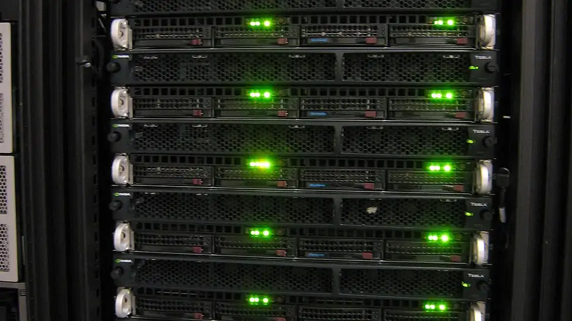
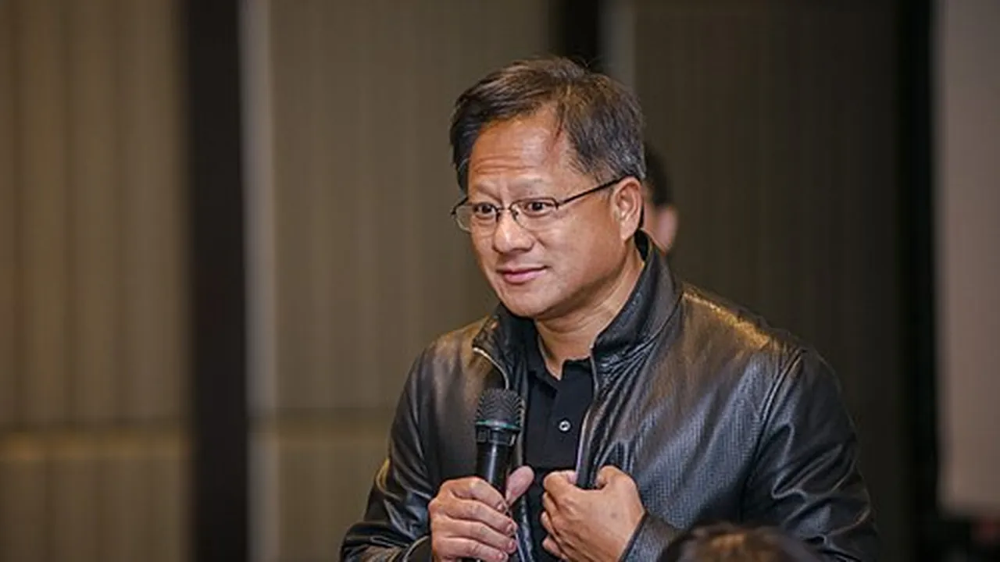

NVIDIA commits $250M to UK agentic AI safety: $50M a year in compute for BOLD, SOFAIR and Imperial
NVIDIA announced Wednesday a five-year compute donation valued at $250 million to strengthen the United Kingdom's agentic AI safety and security research — $50 million a year in compute access for labs working on safeguards for autonomous AI agents, the systems now at the center of the industry's safety anxieties.
The deal
The commitment lands as $50 million in compute access annually. The majority supports the wider UK AI safety and security research community, with a dedicated proportion going to three named programs: BOLD, the British Open-Ended Learning and Discovery Lab led by the University of Oxford; SOFAIR, the Science of Fundamental AI Research Lab led by UCL; and Imperial College London, where the work includes safety engineering and robotics.
Compute will be delivered through UK-based NVIDIA Cloud Partners, with the infrastructure hosted in the UK — giving the country a domestic research platform. Provider selection, technical architecture and commercial terms are still to be agreed.

Agentic safety is the target
The compute is dedicated specifically to agentic safety and security research. The programs focus on secure agents, open-model security and real-world threat mitigations, backed by secure sandboxes, reproducible research and safety-assessment benchmarks. Some of the work will use NVIDIA OpenShell, an open secure runtime, and the NVIDIA Sentry reference design — with findings intended to inform safeguards across the wider computing ecosystem.
NVIDIA founder and CEO Jensen Huang kept the pitch to one line: "AI capability and safety must advance together." The release says the commitment puts accelerated computing "in the hands of U.K. researchers to develop, test and strengthen safeguards for increasingly powerful AI."
Why London, why now
Britain hosts no major AI developer, but it has deliberately built a safety-evaluation stronghold around the AI Security Institute, one of the world's first state-backed AI safety bodies. UK AI Minister Kanishka Narayan called the commitment a vote of confidence in the country's strength in frontier AI safety research; Business Secretary Jonathan Reynolds said it will help British researchers "continue to lead the world" in deploying AI safely.
The timing is not accidental. Scrutiny of AI safety has intensified after Anthropic and OpenAI disclosed instances of rogue or undesired behavior by AI agents, and Microsoft president Brad Smith said in an interview on Monday that the UK was well-placed to help lead work on AI safety guidelines. The donation builds on NVIDIA's earlier collaboration with the UK research community on the University of Bristol's Isambard-AI supercomputer, powered by NVIDIA Grace Hopper Superchips.

Why it matters
Compute is the bottleneck for safety work as much as for capability work: red-teaming agentic systems at scale is expensive, and safety researchers are chronically outgunned by the labs building the models. A guaranteed $50 million a year lets UK labs plan multi-year safety programs instead of working grant to grant.
For the rest of the industry, it's a template: the company that sells the accelerators is volunteering to fund the brakes. Reuters reports the pledge will connect BOLD's Oxford-led work on human-AI co-improvement, SOFAIR's open-source AI architectures and Imperial's robotics safety. What to watch: who the cloud partners are, how much compute reaches teams beyond the three named programs — and whether Anthropic, Google or OpenAI match the move.